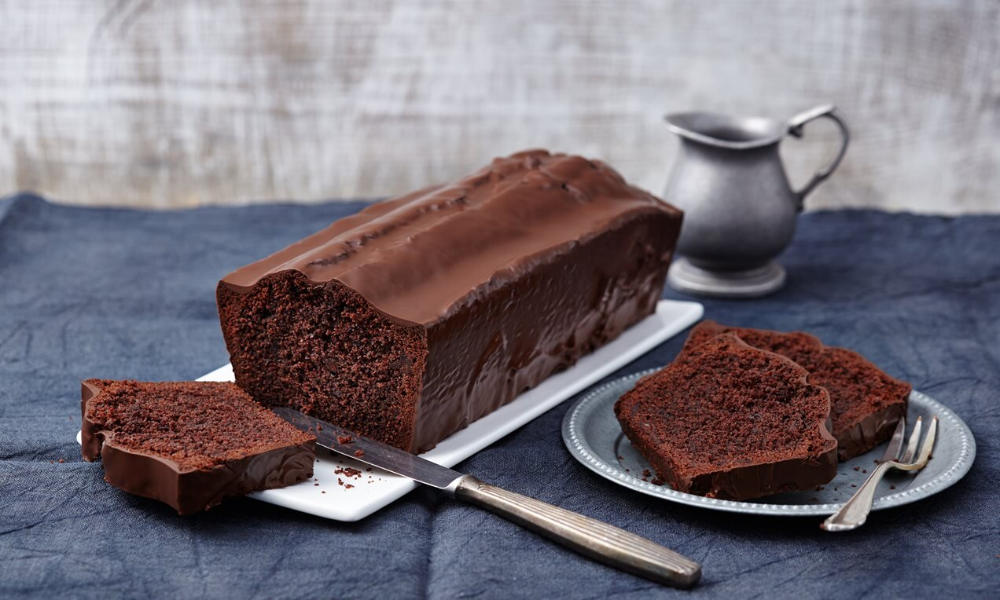

Willis Leckere Küche
Schokoladenkuchen

Zutaten:
- 250g Fett
- 200g Zucker
- 1 Päckchen Vanillezucker
- Salz
- 6 Eier
- 4 EL Kakao
- 500G Mehl
- 1 Päckcehn Backpulver
- 250ml Sahne
Zubereitung:
- Alle Zutaten in eine Rührschüssel füllen und mit dem elektr. Handrührer zu einem glatten Teig rühren.
- Den Teig in eine gefettete Kastenform füllen und im vorgeheizten Backofen backen.
- Kuchen bei 175 Grad für 70 Minuten backen.